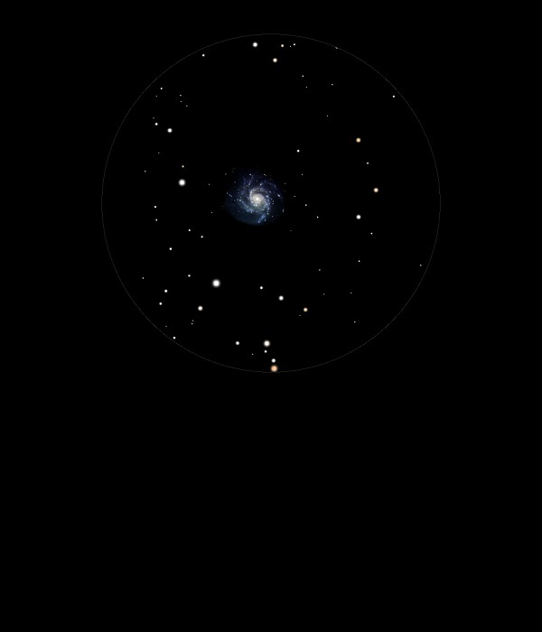

M101

Spiral Galaxy in Ursa Major
NGC 5457
Mag 7.9
The Pinwheel Galaxy
29/03/13
Faint and spread out
01/07/14
Little more than a large but faint hazy patch in 25mm
12mm brings out a hint of its shape and size but you must need a truly dark sky to find it